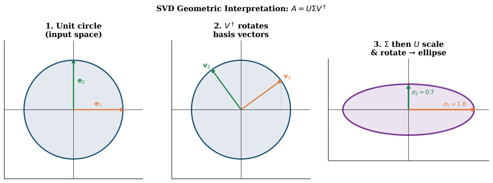

Chapter 1: Mathematical Prerequisites for QML¶
Quantum machine learning lives at the intersection of several deep mathematical traditions. This chapter builds the scaffolding you will use throughout the book: linear algebra over complex fields, probability theory, optimization, information theory, and Fourier analysis. Each section is written with QML applications in mind — we do not merely review mathematics, but motivate every concept with its role in quantum algorithms and learning theory.
Learning Objectives
By the end of this chapter, you will be able to:
-
Work fluently with complex vector spaces, Hilbert spaces, and tensor products
-
Compute spectral decompositions of Hermitian and unitary matrices
-
Apply the Singular Value Decomposition and understand its geometric meaning
-
Reason about probability distributions, expectation values, and Bayesian inference
-
Analyze convex optimization problems and apply gradient descent convergence results
-
Compute Shannon entropy, KL divergence, and mutual information
-
Connect the Discrete Fourier Transform to the Quantum Fourier Transform
1.1 Linear Algebra for Quantum Systems¶
1.1.1 Vector Spaces and Inner Products¶
A vector space over a field \(\mathcal{F}\) (for us, \(\mathcal{F} = \mathbb{C}\)) is a set \(V\) equipped with addition and scalar multiplication satisfying the standard axioms. Quantum states live in complex vector spaces, making complex number arithmetic indispensable.
Definition: Complex Inner Product Space
A complex inner product space \((V, \langle\cdot,\cdot\rangle)\) is a complex vector space equipped with a map \(\langle\cdot,\cdot\rangle: V \times V \to \mathbb{C}\) satisfying:
-
Conjugate symmetry: \(\langle \mathbf{u}, \mathbf{v} \rangle = \overline{\langle \mathbf{v}, \mathbf{u} \rangle}\)
-
Linearity in second argument: \(\langle \mathbf{u}, \alpha\mathbf{v} + \beta\mathbf{w} \rangle = \alpha\langle \mathbf{u}, \mathbf{v} \rangle + \beta\langle \mathbf{u}, \mathbf{w} \rangle\)
-
Positive definiteness: \(\langle \mathbf{v}, \mathbf{v} \rangle \geq 0\), with equality iff \(\mathbf{v} = \mathbf{0}\)
The induced norm is \(\|\mathbf{v}\| = \sqrt{\langle \mathbf{v}, \mathbf{v} \rangle}\).
Note
In quantum mechanics (and physics generally), the inner product is linear in the second argument (“ket”) and conjugate-linear in the first (“bra”). In much of mathematics, the convention is reversed. We follow the physics convention throughout this book.
For \(\mathbb{C}^n\) with column vectors \(\mathbf{u}, \mathbf{v} \in \mathbb{C}^n\), the standard inner product is:
where \(\mathbf{u}^\dagger = (\mathbf{u}^*)^\top\) denotes the conjugate transpose.
1.1.2 Hilbert Spaces¶
Definition: Hilbert Space
A Hilbert space \(\mathcal{H}\) is a complete inner product space. Completeness means every Cauchy sequence converges to a limit in \(\mathcal{H}\). For QML, the relevant Hilbert spaces are:
-
\(\mathbb{C}^{2^n}\) for an \(n\)-qubit system (finite-dimensional, always complete)
-
\(L^2(\mathbb{R}^d)\) for continuous-variable quantum systems
Orthonormal Bases. A set \(\{|e_i\rangle\}_{i=0}^{N-1}\) is an orthonormal basis if \(\langle e_i | e_j \rangle = \delta_{ij}\) and every \(|\psi\rangle \in \mathcal{H}\) can be written \(|\psi\rangle = \sum_i c_i |e_i\rangle\) with \(c_i = \langle e_i | \psi\rangle\).
The computational basis for \(n\) qubits consists of \(2^n\) basis vectors \(\{|0\cdots0\rangle, |0\cdots1\rangle, …, |1\cdots1\rangle\}\), one for each binary string of length \(n\).
1.1.3 Matrix Classes in Quantum Computing¶
| Class | Definition | Property | QC Role |
|---|---|---|---|
| Hermitian | \(A = A^\dagger\) | Real eigenvalues | Observables, Hamiltonians |
| Unitary | \(UU^\dagger = I\) | \(|\lambda_i| = 1\) | Quantum gates |
| Normal | \(AA^\dagger = A^\dagger A\) | Unitarily diagonalizable | Both + more |
| Positive semidefinite | \(\langle v|A|v\rangle \geq 0\) | \(\lambda_i \geq 0\) | Density matrices |
| Projection | \(P^2 = P = P^\dagger\) | \(\lambda_i \in \{0,1\}\) | Measurements |
Pauli Matrices. The four Pauli matrices are the single-qubit observables:
They satisfy \(X^2=Y^2=Z^2=I\), \(XY=iZ\), \(YZ=iX\), \(ZX=iY\).
1.1.4 Spectral Decomposition¶
Theorem 1.1 (Spectral Theorem)
Every normal matrix \(A \in \mathbb{C}^{n\times n}\) can be diagonalized by a unitary matrix:
where \(\lambda_i \in \mathbb{C}\) are eigenvalues and \(|u_i\rangle\) are orthonormal eigenvectors.
For Hermitian matrices (\(A = A^\dagger\)), all eigenvalues are real. For unitary matrices (\(U^\dagger U = I\)), all eigenvalues satisfy \(|\lambda_i| = 1\), i.e., \(\lambda_i = e^{i\phi_i}\).
Solved Example 1.1
Problem: Find the spectral decomposition of \(A = \begin{pmatrix}2&-i\\i&2\end{pmatrix}\).
Solution:
-
Eigenvalues: \(\det(A - \lambda I) = (2-\lambda)^2 - (i)(-i) = (2-\lambda)^2 - 1 = 0\), giving \(\lambda_1 = 1\), \(\lambda_2 = 3\).
-
Eigenvector for \(\lambda_1=1\): \((A-I)\mathbf{v}=0\): \(\begin{pmatrix}1&-i\\i&1\end{pmatrix}\mathbf{v}=0 \Rightarrow v_1 = iv_2\). Normalizing: \(|u_1\rangle = \frac{1}{\sqrt{2}}\begin{pmatrix}i\\1\end{pmatrix}\).
-
Eigenvector for \(\lambda_2=3\): \(v_1 = -iv_2 \Rightarrow |u_2\rangle = \frac{1}{\sqrt{2}}\begin{pmatrix}-i\\1\end{pmatrix}\).
-
Verification: \(U^\dagger A U = \text{diag}(1,3)\). ✓
The decomposition is \(A = 1\cdot|u_1\rangle\langle u_1| + 3\cdot|u_2\rangle\langle u_2|\).
1.1.5 Tensor Products¶
The tensor product is the mathematical operation that combines two quantum systems into a larger composite system.
Definition: Tensor Product
For vectors \(|\psi\rangle \in \mathbb{C}^m\) and \(|\phi\rangle \in \mathbb{C}^n\), the tensor product \(|\psi\rangle \otimes |\phi\rangle \in \mathbb{C}^{mn}\) has components \((|\psi\rangle \otimes |\phi\rangle)_{ik} = \psi_i \phi_k\). For matrices \(A \in \mathbb{C}^{m\times m}\) and \(B \in \mathbb{C}^{n\times n}\):
Two-qubit computational basis:
Solved Example 1.2
Problem: Compute \(|+\rangle \otimes |0\rangle\) where \(|+\rangle = \frac{1}{\sqrt{2}}(|0\rangle+|1\rangle)\).
Solution:
This is a product state (not entangled): both qubits are independent.
1.1.6 Singular Value Decomposition¶
Theorem 1.2 (Singular Value Decomposition)
Every matrix \(A \in \mathbb{C}^{m\times n}\) with \(\text{rank}(A)=r\) can be written:
where \(U \in \mathbb{C}^{m\times m}\) and \(V \in \mathbb{C}^{n\times n}\) are unitary, and \(\Sigma \in \mathbb{R}^{m\times n}\) is diagonal with non-negative entries \(\sigma_1 \geq \sigma_2 \geq \cdots \geq \sigma_r > 0\) (singular values).
QML Applications of SVD:
-
Quantum PCA (qPCA): SVD of the data matrix defines principal components
-
Low-rank approximation: Best rank-\(k\) approximation \(A_k = \sum_{i=1}^k \sigma_i |u_i\rangle\langle v_i|\)
-
Amplitude encoding: SVD helps understand state preparation complexity
-
Matrix inversion: \(A^+ = V\Sigma^+U^\dagger\) (Moore-Penrose pseudoinverse)

1.2 Probability and Statistics¶
1.2.1 Probability Spaces and Random Variables¶
A probability space \((\Omega, \mathcal{F}, P)\) consists of a sample space \(\Omega\), a \(\sigma\)-algebra \(\mathcal{F}\), and a probability measure \(P\). A random variable \(X: \Omega \to \mathbb{R}\) is a measurable function.
Key quantities for a random variable \(X\):
Note
In quantum mechanics, measurement outcomes are inherently probabilistic. The Born rule \(P(\text{outcome } m) = \text{Tr}[\Pi_m \rho]\) is the quantum analogue of a probability distribution over measurement results.
1.2.2 Multivariate Gaussian Distribution¶
The multivariate Gaussian \(\mathcal{N}(\boldsymbol{\mu}, \boldsymbol{\Sigma})\) with mean \(\boldsymbol{\mu} \in \mathbb{R}^d\) and positive definite covariance \(\boldsymbol{\Sigma} \in \mathbb{R}^{d\times d}\) has PDF:
It appears in quantum noise models, Gaussian processes, and variational Bayes.
1.2.3 Bayesian Inference¶
Bayes’ Theorem:
Here \(P(\theta)\) is the prior, \(P(\mathcal{D}|\theta)\) is the likelihood, and \(P(\theta|\mathcal{D})\) is the posterior.
Maximum Likelihood Estimation (MLE):
1.2.4 Concentration Inequalities¶
Concentration inequalities bound how far a random quantity deviates from its expectation. They underpin sample complexity theory in QML.
Theorem 1.3 (Hoeffding’s Inequality)
Let \(X_1, …, X_N\) be independent random variables with \(X_i \in [a_i, b_i]\). Then for any \(t > 0\):
QML implication: Hoeffding’s inequality justifies why \(O(1/\epsilon^2)\) measurements suffice to estimate a quantum expectation value to accuracy \(\epsilon\) (since each measurement outcome lies in \([-1, 1]\)).
1.3 Optimization Theory¶
1.3.1 Convex Analysis¶
Definition: Convex Function
A function \(f: \mathbb{R}^d \to \mathbb{R}\) is convex if for all \(\mathbf{x}, \mathbf{y} \in \text{dom}(f)\) and \(t \in [0,1]\):
Equivalently (for differentiable \(f\)): \(f(\mathbf{y}) \geq f(\mathbf{x}) + \nabla f(\mathbf{x})^\top(\mathbf{y}-\mathbf{x})\).
A function is \(\beta\)-smooth if \(\|\nabla f(\mathbf{x}) - \nabla f(\mathbf{y})\| \leq \beta\|\mathbf{x}-\mathbf{y}\|\) and \(\alpha\)-strongly convex if \(f(\mathbf{y}) \geq f(\mathbf{x}) + \nabla f(\mathbf{x})^\top(\mathbf{y}-\mathbf{x}) + \frac{\alpha}{2}\|\mathbf{x}-\mathbf{y}\|^2\).
Important
Most quantum cost functions are not convex. They involve trigonometric functions of parameters, creating a rich landscape with many local minima — or worse, a flat “barren plateau” where gradients vanish exponentially. See Chapter 16 for a detailed treatment.
1.3.2 Gradient Descent and Convergence¶
The gradient descent update rule with step size \(\eta > 0\):
Theorem 1.4 (Convergence of GD for Smooth Convex Functions)
If \(f\) is convex and \(\beta\)-smooth, gradient descent with \(\eta = 1/\beta\) satisfies:
For \(\alpha\)-strongly convex, \(\beta\)-smooth functions, convergence is geometric: \(f(\boldsymbol{\theta}_T) - f^* \leq (1 - \alpha/\beta)^T (f(\boldsymbol{\theta}_0) - f^*)\).
Algorithm: Stochastic Gradient Descent (SGD)
Input: Loss \(\mathcal{L}\), data \(\{(\mathbf{x}_i, y_i)\}\), learning rate schedule \(\{\eta_t\}\), epochs \(T\)
Output: Optimized parameters \(\boldsymbol{\theta}^*\)
-
Initialize \(\boldsymbol{\theta}_0\) (e.g., random)
-
For \(t = 1, 2, …, T\):
-
Sample mini-batch \(\mathcal{B} \subset \{1,…,N\}\) of size \(b\)
-
Compute stochastic gradient: \(\hat{g}_t = \frac{1}{b}\sum_{i\in\mathcal{B}} \nabla_\theta \ell(\boldsymbol{\theta}_{t-1}; x_i, y_i)\)
-
Update: \(\boldsymbol{\theta}_t = \boldsymbol{\theta}_{t-1} - \eta_t \hat{g}_t\)
-
-
Return \(\boldsymbol{\theta}_T\)
1.3.3 Lagrange Multipliers and KKT Conditions¶
Constrained optimization \(\min_\mathbf{x} f(\mathbf{x})\) s.t. \(g_i(\mathbf{x}) = 0\), \(h_j(\mathbf{x}) \leq 0\) is solved via the Lagrangian:
At optimality, the KKT conditions hold:
KKT conditions appear directly in SVM training (see Chapter 4).
Solved Example 1.3
Problem: Minimize \(f(x,y) = x^2 + y^2\) subject to \(g(x,y) = x + 2y - 5 = 0\).
Solution: Lagrangian: \(\mathcal{L} = x^2 + y^2 + \lambda(x+2y-5)\). Setting \(\partial\mathcal{L}/\partial x = 2x + \lambda = 0 \Rightarrow x = -\lambda/2\). Setting \(\partial\mathcal{L}/\partial y = 2y + 2\lambda = 0 \Rightarrow y = -\lambda\). Substituting into constraint: \(-\lambda/2 + 2(-\lambda) = 5 \Rightarrow \lambda = -2\). Therefore \(x^* = 1\), \(y^* = 2\), \(f(x^*,y^*) = 5\).
1.4 Information Theory¶
1.4.1 Shannon Entropy¶
Definition: Shannon Entropy
For a discrete probability distribution \(P = \{p_1, …, p_n\}\):
(with \(0\log 0 := 0\) by continuity). \(H(P) \in [0, \log_2 n]\), with maximum at the uniform distribution.
Key properties:
-
\(H(P) = 0\) iff \(P\) is deterministic (\(p_i = 1\) for some \(i\))
-
\(H(X, Y) \leq H(X) + H(Y)\) with equality iff \(X, Y\) independent
-
Data processing inequality: \(H(f(X)) \leq H(X)\) for any \(f\)
1.4.2 KL Divergence and Cross-Entropy¶
(Gibbs’ inequality: \(D_{\text{KL}} = 0\) iff \(P = Q\)). KL divergence is not symmetric: \(D_{\text{KL}}(P\|Q) \neq D_{\text{KL}}(Q\|P)\) in general.
Cross-entropy: \(H(P, Q) = -\sum_i p_i \log q_i = H(P) + D_{\text{KL}}(P\|Q)\). This is the standard classification loss when \(P\) is the true labels and \(Q\) is the model output.
Mutual Information:
Solved Example 1.4
Problem: Compute \(D_{\text{KL}}(\mathcal{N}(\mu_1, \sigma_1^2) \| \mathcal{N}(\mu_2, \sigma_2^2))\).
Solution: For two Gaussians, the KL divergence has a closed form:
For \(\mu_1=0, \sigma_1=1, \mu_2=1, \sigma_2=2\): \(D_{\text{KL}} = \log 2 + \frac{1+1}{8} - \frac{1}{2} = 0.693 + 0.25 - 0.5 = 0.443\) bits.
import numpy as np
from scipy.stats import entropy
def shannon_entropy(probs):
"""Shannon entropy in bits."""
probs = np.array(probs)
probs = probs[probs > 0] # remove zeros
return -np.sum(probs * np.log2(probs))
def kl_divergence(p, q):
"""KL divergence D_KL(P || Q)."""
p, q = np.array(p), np.array(q)
mask = (p > 0) & (q > 0)
return np.sum(p[mask] * np.log(p[mask] / q[mask]))
def mutual_information(joint_pxy):
"""Mutual information I(X;Y) from joint distribution."""
px = joint_pxy.sum(axis=1)
py = joint_pxy.sum(axis=0)
return shannon_entropy(px) + shannon_entropy(py) - shannon_entropy(joint_pxy.flatten())
# Example
p = [0.5, 0.25, 0.25]
print(f"H(P) = {shannon_entropy(p):.4f} bits") # 1.5 bits
q = [0.4, 0.3, 0.3]
print(f"KL(P||Q) = {kl_divergence(p, q):.4f}")
1.5 Fourier Analysis and Connections to QFT¶
1.5.1 Discrete Fourier Transform¶
The Discrete Fourier Transform of a vector \(\mathbf{x} \in \mathbb{C}^N\) is:
The DFT is a unitary linear map: \(\hat{\mathbf{X}} = F_N \mathbf{x}\) where \((F_N)_{kj} = \omega^{jk}/\sqrt{N}\) (normalized form).
The Quantum Fourier Transform (QFT) implements \(F_{2^n}\) as a quantum circuit on \(n\) qubits in \(O(n^2)\) gates (vs. classical FFT’s \(O(N\log N)\)):
Tip
The QFT appears as a subroutine in Shor’s algorithm, Quantum Phase Estimation, and the Harrow-Hassidim-Lloyd (HHL) algorithm. Understanding the DFT deeply will pay dividends when studying these algorithms in Chapter 2.
1.5.2 Fourier Features for Kernel Methods¶
Bochner’s theorem states that a stationary kernel \(k(\mathbf{x}-\mathbf{y})\) is positive definite iff its Fourier transform \(p(\boldsymbol{\omega}) \geq 0\) everywhere:
This motivates random Fourier features for approximating kernel SVMs: sample \(\boldsymbol{\omega}_j \sim p\), then \(\phi(\mathbf{x}) = \sqrt{2/D}[\cos(\boldsymbol{\omega}_1^\top\mathbf{x}+b_1), …]\). The quantum analogue is a quantum feature map \(U_\phi\) encoding \(\mathbf{x}\) into a quantum state — see Chapter 7.
1.6 Chapter Summary¶
Chapter Summary
-
Linear algebra: Complex inner product spaces and Hilbert spaces form the arena for quantum states. Key matrix classes: Hermitian (observables), unitary (gates), and positive semidefinite (density matrices).
-
Spectral decomposition: Every normal matrix diagonalizes unitarily; eigenvalues of Hermitian operators are real; unitary operators have unit-modulus eigenvalues.
-
Tensor products: Compose quantum systems via \(\otimes\). An \(n\)-qubit system lives in \(\mathbb{C}^{2^n}\).
-
SVD: Every matrix has a singular value decomposition; SVD underlies quantum PCA and data encoding.
-
Probability: Expectation values, Bayesian inference, and concentration inequalities (Hoeffding) govern statistical aspects of quantum measurements.
-
Optimization: Most quantum cost functions are non-convex. Gradient descent and SGD are the workhorses; KKT conditions appear in SVM duality.
-
Information theory: Shannon entropy, KL divergence, and mutual information have quantum analogues (von Neumann entropy, quantum relative entropy) covered in Chapter 3.
-
Fourier analysis: The DFT is the classical counterpart of the Quantum Fourier Transform, a key subroutine in exponential speedup algorithms.
Exercises¶
Exercises
Exercise . Show that the Pauli matrices \(\{X, Y, Z\}\) satisfy \(\{X, Y\} = XY + YX = 0\) (anti-commute) and \([X, Y] = XY - YX = 2iZ\) (commutation relation).
Exercise . Verify that the matrix \(U = \frac{1}{\sqrt{2}}\begin{pmatrix}1&1\\1&-1\end{pmatrix}\) (Hadamard gate) is unitary. Find its eigenvalues and eigenvectors.
Exercise . Compute the tensor product \(H \otimes H\) where \(H\) is the \(2\times 2\) Hadamard matrix. This is the two-qubit Hadamard. Write the \(4\times 4\) matrix.
Exercise . Prove that for any unitary \(U\), the eigenvalues satisfy \(|\lambda_i| = 1\). Hint: Use \(UU^\dagger = I\) and \(Uu_i = \lambda_i u_i\).
Exercise . A qubit state \(|\psi\rangle = \alpha|0\rangle + \beta|1\rangle\) requires \(|\alpha|^2 + |\beta|^2 = 1\). Show this equals the inner product condition \(\langle\psi|\psi\rangle = 1\).
Exercise . Find the SVD of \(A = \begin{pmatrix}3&0\\4&0\end{pmatrix}\). Identify the singular values and verify \(A = U\Sigma V^\dagger\).
Exercise . Compute \(H(\text{Bernoulli}(p))\) and find the value of \(p\) that maximizes it.
Exercise . Show that \(D_{\text{KL}}(P\|Q) \geq 0\) for all distributions \(P\), \(Q\). (Use Jensen’s inequality: \(\mathbb{E}[\phi(X)] \geq \phi(\mathbb{E}[X])\) for convex \(\phi\).)
Exercise . Prove the chain rule for entropy: \(H(X,Y) = H(X) + H(Y|X)\) where \(H(Y|X) = -\sum_{x,y} P(x,y)\log P(y|x)\).
Exercise . For gradient descent on \(f(x) = \frac{1}{2}x^2\) (with \(\beta=1\), \(\eta=0.8\)), starting at \(x_0 = 10\), compute \(x_5\). Does it converge?
Exercise . Prove the Cauchy-Schwarz inequality: \(|\langle u|v\rangle|^2 \leq \langle u|u\rangle \cdot \langle v|v\rangle\). Hint: Consider \(\|u - \frac{\langle u|v\rangle}{\langle v|v\rangle}v\|^2 \geq 0\).
Exercise . Using NumPy, implement a function compute_svd(A) that returns \(U, \Sigma, V^\dagger\) and verify it on a random \(5\times 3\) complex matrix. Plot the singular values.
Exercise . Using Hoeffding’s inequality, how many quantum measurements \(N\) are needed to estimate \(\langle\hat{O}\rangle\) to precision \(\epsilon = 0.01\) with confidence \(1 - \delta = 0.99\)? (Each shot returns a value in \([-1, 1]\).)
Exercise . The spectral norm of \(A\) is \(\|A\|_2 = \sigma_{\max}(A)\). Show that for unitary \(U\), \(\|U\|_2 = 1\) and \(\|UA\|_2 = \|A\|_2\).
Exercise . Look up the concept of an \(\epsilon\)-net over the Hilbert space \(\mathbb{C}^{2^n}\). How does the size of this net relate to the sample complexity of learning a quantum classifier? (See Ref. (Bartlett 1998) for classical analogues.)
Further Reading
-
Linear Algebra: Horn & Johnson, Matrix Analysis (2013) — definitive reference for matrix theory
-
Optimization: Boyd & Vandenberghe, Convex Optimization (2004) — free online at
stanford.edu/ boyd/cvxbook -
Information Theory: Cover & Thomas, Elements of Information Theory (2006) — comprehensive classical reference
-
Probability: Wainwright, High-Dimensional Statistics (2019) — modern treatment of concentration inequalities
-
QML specific: Nielsen & Chuang, Quantum Computation and Quantum Information (2000) (Nielsen and Chuang 2000), Chapters 2–4
-
Interactive: Khan Academy Linear Algebra + 3Blue1Brown Essence of Linear Algebra (YouTube) for visual intuition